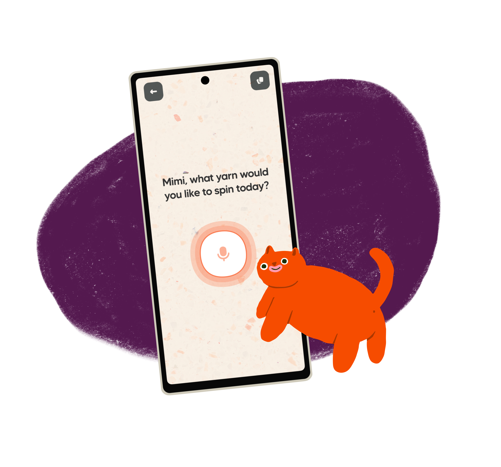
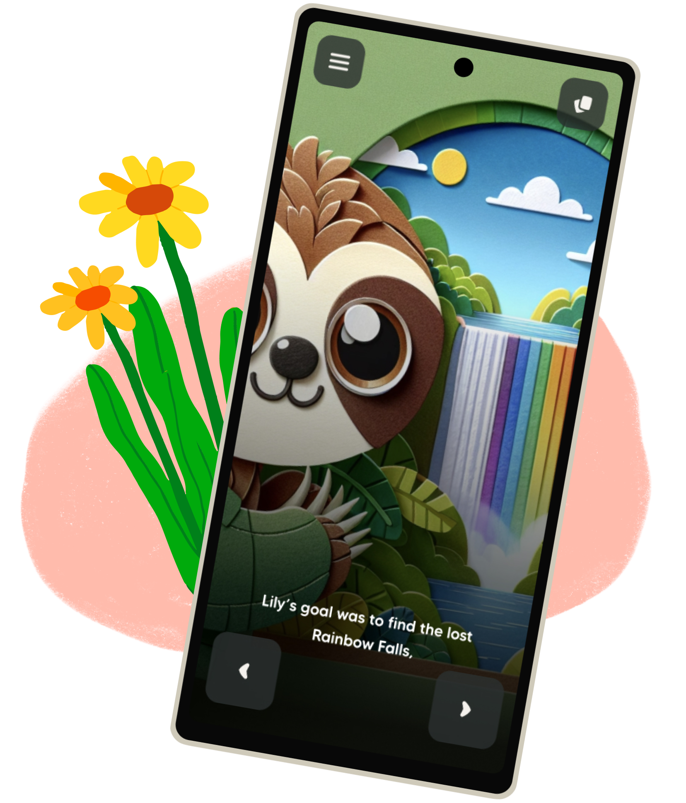
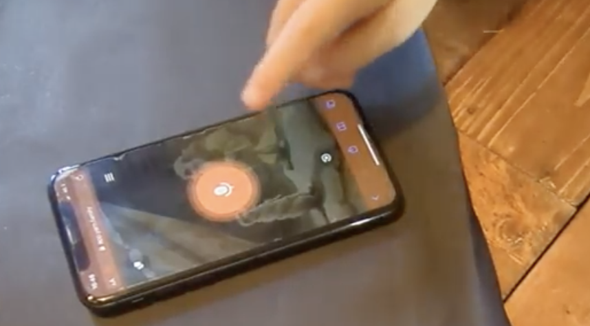
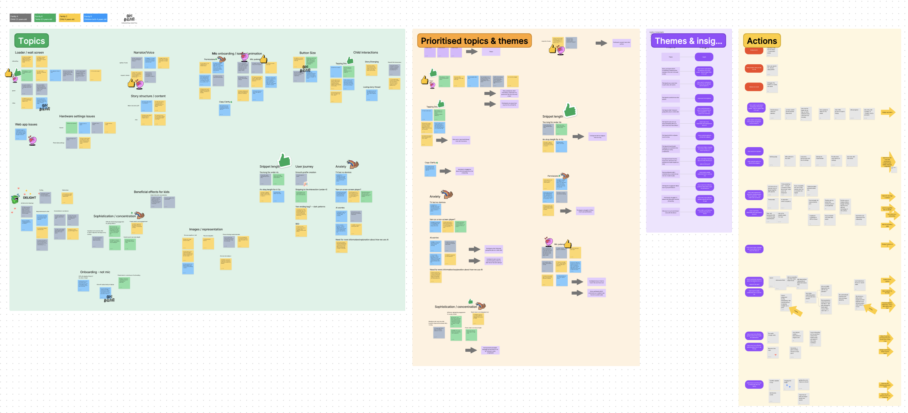
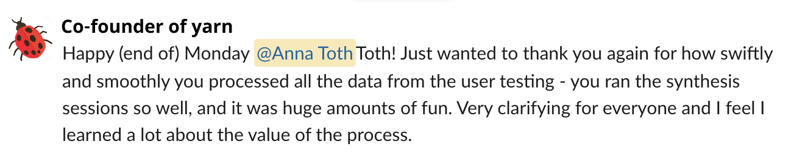

As a very young startup with limited resources, yarn launched a functional MVP app. We had made some assumptions which we wanted to validate with real users before building the app further.
As the sole product designer, I arranged usability testing sessions to gather insights into how our app is doing. Based on the findings, my team and I got together to understand the data and turn user feedback into actionable tasks and pave the further development of the project.
Yarn is an AI-powered interactive storytelling app for children. We are on a mission to nourish children's creativity by letting them spin yarns and be in control of their stories.
The app asks the user what yarn (story) they want to spin. The user has the option to type, take a photo, or tell the app their ideas.
Yarn then generates the beginning of a story, then asks the user for more input. It is an interactive process, which means there is a lot of user interaction with the microphone button.
I reached out to parents with children in yarn’s target age group and arranged sessions.
I prepared open-ended questions so we get the most unbiased results possible, and bite-sized tasks to keep the children engaged (it is quite difficult to keep a 4 year old child focused!)
We recorded each session and took notes to be used later.
I planned a 3 hour long workshop for the team to sort the raw usability testing feedback into categories, find recurring themes, draw insights, and eventually come up with actionable tasks based on all the data.
We used FigJam and had a great time raking through all the insights.
We ended up with quite a few findings that we turned into action points. In a later session, we prioritised these items, which helped us figure out the roadmap for further product development. Here are some examples.
Every child and most parents struggled with the microphone button. They either started speaking before activating the mic, or they double tapped the button which then submitted before they could start speaking.
We made sure to also take note of positive feedback—users delighted in the characters they created and were excited about the app changing the story based on their inputs. Our actionable task for the future was to utilise every interaction (be it button taps or emails) to delight the user.
Doing usability testing sessions and efficiently synthesising the findings with the team proved very useful.
Involving the entire team meant that there was now more awareness of our users and the value of testing with real people. It also guided us to improve the product in ways that paved the path to happier users and higher retention rates.
